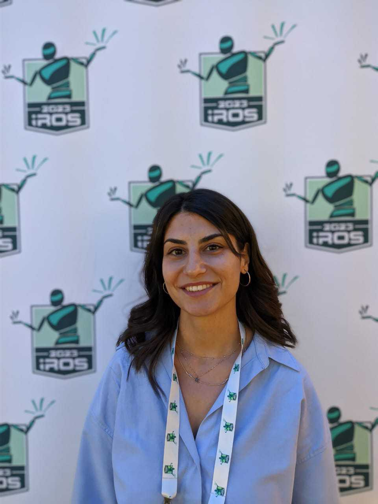

I build bio-inspired AI systems that perceive and act in the physical world — bridging spiking neural networks, computer vision, and robotics to create efficient, intelligent machines.

I am a Postdoctoral Researcher at the Democritus University of Thrace (DUTH), Department of Production and Management Engineering, and a research associate at NCSR "Demokritos", Institute of Informatics and Telecommunications, Athens.
My research sits at the intersection of artificial intelligence, computational neuroscience, and robotics. I am particularly interested in how biological principles of neural computation, such as spike-based communication, can lead to more efficient and adaptive AI systems.
I completed my PhD at DUTH (2021–2025) under Prof. Antonios Gasteratos, on Spiking Neural Networks for Perception and Control in Human Assistive Robotic Systems. Before that, I studied Physics at the University of Patras and completed an MSc in Automation Systems at NTUA.
Publication list auto-fetched from OpenAlex · updated on page load.